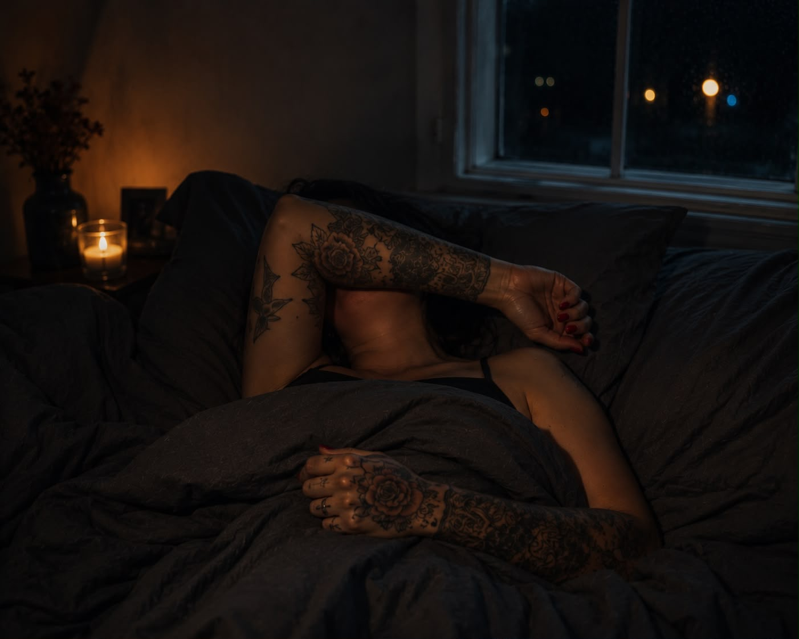

Nattevakt
Jeg har alltid vært redd for natta.
Ikke for at det skal ligge et monster under senga.
Ikke for mørket.
Ikke for at det lusker en innbruddstyv rundt husveggene.
Nei.
Jeg var redd for stillheten.
Stillheten i huset.
Mørket inni meg.
Og den tyven som snek seg inn i all den indre uroen min.
Det var som om jeg satt nattevakt.
Jeg måtte passe på at jeg slapp å kjenne etter.
Slapp å være alene med tankene mine.
Slapp å møte følelsene som ventet så fort huset ble stille.
Og det er vel derfor drikkemønsteret mitt ble som det ble.
Jeg dro ikke på fest.
Jeg drakk ikke dagen lang.
Det sluttet jeg med da jeg var i starten av tjueårene.
De siste årene jeg drakk, etter at jeg ble mor, drakk jeg når huset sov.
Det er egentlig helt sinnssykt å tenke på hvor lite søvn jeg fikk.
Hvor mye kaffe jeg drakk for å komme meg gjennom dagene etter tre-fire timers urolig søvn på nedgående rus.
Og hvor mange ganger jeg tenkte:
«Jaja, ungene ser meg jo ikke med promille.»
Men hva fikk de?
En mamma som var fyllesjuk.
Det er like greit å kalle en spade for en spade.
For ja.
Jeg var fyllesjuk.
Jeg hadde vondt i hodet.
Vondt i magen.
Jeg var trøtt.
Utslitt.
Og jeg var ikke så til stede som jeg trodde.
Jada.
Jeg var en såkalt velfungerende alkoholiker.
Jeg var på foreldremøter.
På dugnader.
På fotballkamper.
Jeg hjalp med lekser.
Leste nattahistorier.
Blåste på skrubbsår og plastra knær.
Klemte.
Heiet.
Lagde middag.
Bakte brød.
Perlet glassmykker.
Spilte stigespillet.
Men jeg var aldri helt der.
Jeg innrømte det aldri for meg selv.
Gud forby.
Da hadde jeg hatt altfor mye å forsvare.
Neida.
Jeg sov bare dårlig.
Jeg hadde bare hodepine.
Og alle de gangene Barne-TV sto på.
Brannmann Sam.
Kaptein Sabeltann.
Da mumlet jeg bare litt til svar mens jeg lukket øynene.
Den halvtimen brukte jeg til å hente meg inn så jeg kunne klare resten av dagen.
Det gjør vondt å tenke på i dag.
For jeg får det ikke ugjort.
Jeg har så mange bilder fra da barna var små.
Men de bildene viser nesten aldri meg.
Jeg sto bak kameraet.
Og bakenfor mitt eget liv.
Jeg tenkte så ofte at jeg håpet noen skulle komme og redde meg.
At hvis jeg bare fant en mann som kunne holde rundt meg.
Passe på natta for meg.
Da ville jeg endelig få fred.
Men hvem prøvde jeg egentlig å lure?
Den eneste som kunne redde meg, var meg selv.
Og det er først nå, snart 250 dager edru, at jeg begynner å forstå det.
Jeg var ikke redd for natta.
Jeg var redd for å være alene med meg selv.
Det var aldri mørket utenfor huset som skremte meg.
Det var mørket jeg bar inni meg.
Jeg trodde alkoholen holdt det på avstand.
Det gjorde den ikke.
Den utsatte det bare.
Alt jeg løp fra om natta, ventet på meg neste morgen.
Med renter.
Og kanskje er det nettopp det som er den største misforståelsen om edring.
Mange tror den vanskeligste dagen er den dagen du slutter å drikke.
For meg var det nesten motsatt.
Det var da arbeidet begynte.
For plutselig sto jeg der.
Uten flaska.
Uten unnskyldningene.
Uten noen å skylde på.
Bare meg.
Og det er en brutal erkjennelse.
Ingen andre kan tenke tankene mine.
Ingen andre kan føle følelsene mine.
Ingen andre kan leve livet mitt.
Den jobben er min.
Og den er tung.
Men den gir også noe jeg aldri fant i bunnen av et vinglass.
Ikke en eufori.
Ikke en lykkefølelse.
Men noe mye stillere.
Jeg legger plutselig merke til at jeg er til stede.
At jeg faktisk sov litt.
At natta ikke alltid er farlig.
At, ok…
…så fikk jeg ikke sove.
Men jeg våknet i hvert fall ikke fyllesjuk.
Jeg lar tankene komme.
Og gå.
Jeg lar følelsene komme.
Og gå.
De er ikke en dom.
De er ikke sannheten om hvem jeg er.
De er bare gjester.
De er bare en del av å være menneske.
Jeg tror det tok meg nesten 44 år å forstå det.
Jeg har levd som om hver eneste vonde tanke betydde at noe var galt med meg.
Som om uro måtte bedøves.
Som om ensomhet måtte bort.
Som om frykt var noe jeg aldri skulle kjenne på.
Men livet lovet meg aldri et liv uten vonde tanker.
Det lovet meg aldri at jeg alltid skulle være glad.
At jeg alltid skulle sove godt.
At jeg aldri skulle kjenne på sorg, uro eller skam.
Det lovet livet ingen av oss.
Livet er i bevegelse.
Tanker er i bevegelse.
Følelser er i bevegelse.
Alt passerer.
Og kanskje er det nettopp det som har gitt meg mest ro.
Ikke at de vonde tankene er borte.
Men at jeg endelig har sluttet å tro at de er meg.
Og med den erkjennelsen…
…at jeg bærer mitt eget liv…
…skjer det noe.
Det blir plass.
Plass til ro.
Plass til klarhet.
Plass til meg.
Og det merkeligste av alt…
Jeg er ikke lenger opptatt av at andre skal fylle tomrommet inni meg.
Det er som om jeg endelig har begynt å ville passe på meg selv.
At jeg kjenner omsorg for meg.
Respekt for meg.
Tillit til meg.
For mens jeg var i aktiv rus, sluttet jeg å legge merke til ødeleggelsene.
Jeg tilpasset meg bare mitt eget kaos.
Jeg normaliserte det dysfunksjonelle.
Og uten at jeg merket det, gled jeg inn i et liv jeg aldri ville akseptert som rusfri.
Kanskje var det aldri natta jeg var redd for.
Kanskje var jeg bare et menneske som hadde sittet nattevakt så lenge…
…
…at jeg hadde glemt hvordan det var å hvile.
